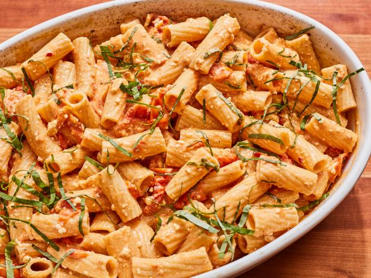
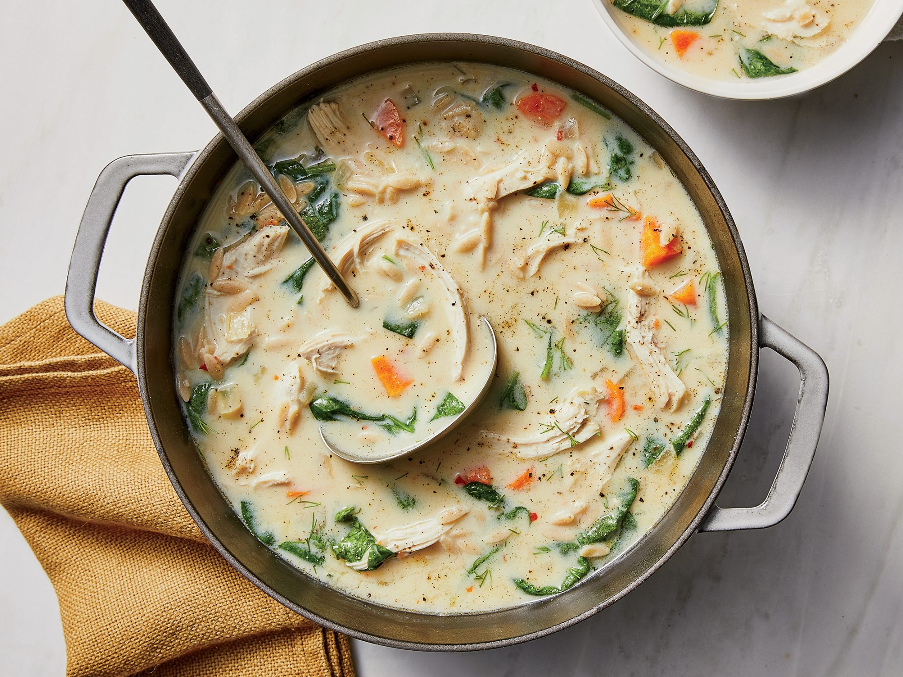
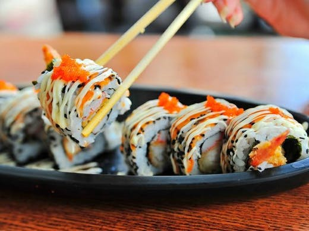
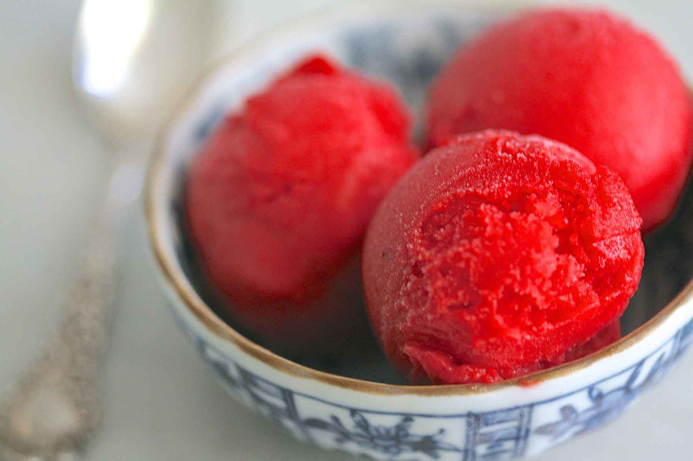
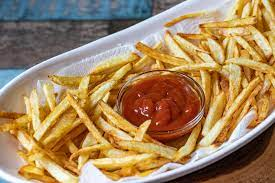

FOODMAINIA
About Us
I started actually trying to cook back in 2005 (I was REALLY good at making toast) and baking didn't come for me until 2008, and let me tell you, before that time I was completely lost in the kitchen! Yep, I said it! I never dreamed that I would end up with a major cooking/baking obsession. When I started baking it was due to the fact that I always felt like I could do better than dropping off store bought treats for my kids school parties, true story. So, I started out making cookies from boxed cake mixes. Once I realized that I was pretty stinkin' good at cookie making AND that my kiddos really enjoyed being in the kitchen with me AND that I kinda liked the good stuff I was coming up with.....well, the rest is history.
My small hobby blog quickly ignited a passion for food photography as well as a desire to teach others…not just what to bake, but how to bake. As a self-taught baker myself, I’m fiercely dedicated to providing well-tested recipes and sharing everything I’ve learned along the way. Before I post a new recipe, you can feel confident that I have already tested it dozens of times in my own kitchen. This is why Foodmania has become a trusted resource for anyone who wants to bake from scratch. In addition to the hundreds of recipes on the site, you’ll also find helpful kitchen tips, lessons on baking basics, step-by-step photos, and video tutorials that will help you gain confidence and expertise in the kitchen.
| These are | just a couple of | our Favourites! |
|---|---|---|
|  |  |  |
Have a question for us? You’ll find our most Frequently Asked Questions helpful. If you have a question about a specific recipe, please review the comments on that post. If your question hasn’t been answered, feel free to continue the conversation by leaving a comment or question directly in that post.
Upcoming Posts
Learn how to make my Homemade Raspberry Sorbet recipe and you'll be enjoying this delightful frozen dessert in just minutes! This cold, refreshing summertime dessert will perfect your summer!

Beef Tacos – the old school way!!! With juicy seasoned beef taco meat and crispy shells, this taco recipe is made with a simple yet flavour packed homemade taco seasoning that truly tastes like store bought.
Learn the secret to making the best homemade French fries from russet potatoes right at home! These are easy to make ahead of time and fry or bake in the oven for a quick snack or side dish idea!
Back to the Top